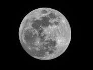

The Moon is Earth's largest natural satellite, and we usually see it in the night sky. Some other planets also have moons or natural satellites. Our moon is about a quarter the size of the Earth. Because it is far away it looks small, about half a degree wide. The gravity on the moon is one-sixth of the Earth's gravity. It means that something will be six times lighter on the Moon than on Earth. The Moon is a rocky and dusty place. The Moon moves slowly away from the earth at a rate of 3.8 cm per year, due to the effect of tidal dissipation.
| stars | planets |
|---|---|
| sun | earth |
| moon | mars |
| WR 124 | venus |